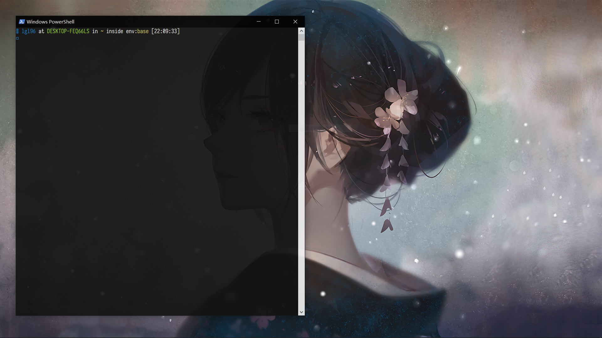
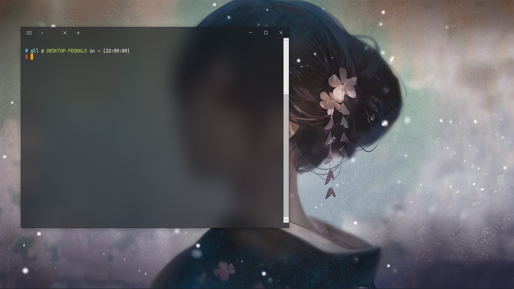

主要备份下自己对于win10系统的设置，PowerShell的美化，wsl的使用：写博客和抄代码。
PowerShell的美化
主要用到的有，各个模块主要由PS Gallery进行：
- posh-git
- oh-my-posh
- PSReadLine
- PS Color (其实好像Dir Color可以直接用linux上的配置文件，但是好像一直没效果😂)
- PowerLine Font：Sarasa Gothic(or: dejavu sans mono nerd font)
- ColorTool (release 界面，添加到环境变量)
1
2
3
4
5
6
7
8(new-object Net.WebClient).DownloadString("http://psget.net/GetPsGet.ps1") | iex #PS Get
Get-ExecutionPolicy -List
Set-ExecutionPolicy RemoteSigned -Scope CurrentUser
Get-ExecutionPolicy -Scope CurrentUser
Install-Module posh-git -Scope CurrentUser
Install-Module oh-my-posh -Scope CurrentUser
Install-Module -Name PSReadLine -AllowPrerelease -Scope CurrentUser
Install-Module -Name PSColors -Scope CurrentUser
首先在Power Shell的快捷方式目标后加上运行参数 -NoLogo来禁止每次打开时的版权声明，然后到 C:\Users\\*\Documents\WindowsPowerShell 下修改配置文件导入模块声明主题。
1 | Import-Module PSColor |
最终配置好截图如下

WSL的配置
WSL的安装
好像因为用的是教育版Win10，没有Windows商店，没办法直接点点/(ㄒoㄒ)/~~，只能用手动了。首先下载Ubuntu 18.04的映像。然后在Downloads文件夹执行以下命令，然后就可以在开始菜单找到Ubuntu App了，点击进行部署。
1 | Add-AppxPackage CanonicalGroupLimited.Ubuntu18.04onWindows_1804.2018.817.0_x64__79rhkp1fndgsc.Appx |
Ubuntu 配置
没什么好备份的，就是设置账号密码，配置hexo和anaconda环境
ZSH 配置
用上就会爱上o(////▽////)。主要有：
- ZSH
- Oh-My-ZSH
- zsh-syntax-highlighting
- zsh-autosuggestions
- cp
- extract
- web-search
- colored-man-pages
- autojump
- tldr
.zshrc文件内容如下：
1 | export ZSH="/home/gll/.oh-my-zsh" |
